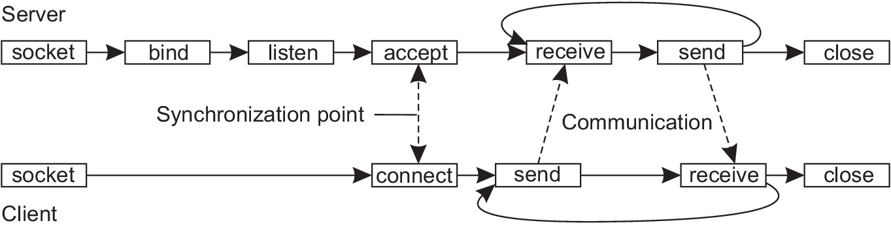

- application layer - e-mail protocols, web access protocols, file transfer protocols
- presentation layer - how data are represented independently of the hosts on which applications are running
- session layer - support for sessions between applications,synchronization facilities. Inserting checkpoints, which is useful in case of crash
- transport layer - protocols for directly supporting applications (reliable communications, support of real time streaming of data). Messages received from the upper level are broken into smaller pieces suitable for the transmission. How many packets are received, which have to be retransmitted. TCP , UDP, ...
- network layer - protocols for routing a message through a computer network and handling congestions, IP (Internet protocol) is the most widely used network protocol
- data link layer - detecting and possibly correcting transmission errors, computing checksum and adding it to the frame
- physical layer - concerned about transmitting 0s and 1s. How many bits per second can be sent. Meaning and number of pins in network connectors, etc...
Distributed systems
6. Communication
Importance of communication
- Interprocess communication is an esential part of all distributed systems
- Exchange of information is based on low-level message passing
- What kind of exchange is used for nondistributed platforms?
- Communication must adhere to specific rules
- communication protocol - a set of rules according to which communication is carried out
- protocol is said to provide communication services
- two types of communication services:
- connection-oriented service - connection is established bofore exchanging messages and specific parameters of the used protocol , after exchange connection is terminated
- connectionless service - no setup in advance is needed
- protocols are easily explained if structured into layers
OSI reference model
- ISO OSI model (Open Systems Interconnection Reference Model)
- OSI is only refernce model and protocols developed for OSI model have never been widely used
- however OSI model is useful for understanding computer networks
OSI model

Internet protocol suite
- application layer - layer in which high level protocols operate such as e-mail protocols, web access protocols, file transfer protocols (HTTP, HTTPS, FTP, IMAP, POP, SSH, SMTP, Telnet,...)
- transport layer - provides a channel for the communicaton needs of applications (TCP , UDP, DCCP, ...)
- internet layer - provides uniform networking interface for exchanging datagrams, protocols for routing a message through a computer network. IP (Internet protocol) is the primary protocol in this scope (IPv4, IPv6, ICMP, ...)
- link layer - includes protocols used to describe local network topology and corresponds to corresponds to the physical and data link layers of OSI model MAC (Ethernet, Wi-Fi, DSL, ISDN, FDDI),...
standard network model used for internet which has fewer rigidly defined layers then OSI, easier fit for real-world protocols
Middleware protocols
- Middleware should be mostly applications which are mostly in the application layer
- general purpose protocols offered for other applications
- DNS Domain Name System - distributed service used to lookup a network addresses associated with a name
- translates more readable domain names to IP addresses
- for instance www.dhbw.de - > 141.31.235.50 you can try ping dhbw.de
- Example Google Public DNS offered to internet users worldwide - IP addresses 8.8.8.8 and 8.8.4.4 are used for IPv4 service,
- authentication and authorization protols could be example of middleware protocols
UDP (User Datagram Protocol)
- UDP is a simple transport protocol which extends host-to-host
delivery of packets
- connectionless protocol which belongs to the transport layer
- abstract port numbers used to identify which processes communicate
- port numbers hold for a single host
- that's why pair port, host-ip is used for demultiplexing in UDP
- unreliable, unordered delivery
UDP protocol
- source port
- destination port
- length of UDP segment including header
- checksum has a goal to detect "errors" (flipped) bits in segments
- data application data (payload)
- Why to use UDP protocol?
- no connection (no delay)
- no connection state at sender (reciever)
- small header size
- no congestion control
UDP datagram (packet) consists of the following fields

TCP protocol
- TCP is a connection-oriented protocol which belongs to the transport layer
- connection is maintained from the beginning till the end of exchange
- handshaking - exchange of control messages - sender, receiver state before data exchange
- to agree to establish connection
- to agree on connection parameters
- full duplex data- bi directional data flow in same connection
TCP dataram

TCP datagram structure
- source port
- destination port
- sequence number
- acknowledgement number
- flags indicating specific meaning of other fields
- receive window size of the window that receiver is willing to receive
- checksum has a goal to detect "errors" (flipped) bits in segments
- options which are of variable size
- data application data (payload)
- Why to use TCP protocol?
- reliable data transfer - not received packets are sent again
- flow control
- congestion control
TCP datagram (packet) consists of the following fields
Sinergy of protocols (HTTP,FTP, TCP/IP, ...)
- HTTP - Hyper Text Transfer Protocol is an appplication layer protocol
- TCP - is a transport layer protocol
- IP - is a network layer protocol
- an analogy for better explanation
- IP could be thought of as a high-way
- TCP and UDP as different types of trucks
- HTTP, SMTP, FTP and other application protocols as a load that trucks transport
These protocols work together to enable web transfers

Socket programming
- many distributed systems built on top of the simple message-oriented model offered by the transport layer
- socket is conceptually a communication end point
- to which an application can write data to be sent over an underlying network
- from which incoming data can be read
- socket is a specialized software used for communication between a client and a server
- one socket is located on the server side and one on the client side
- socket makes an abstraction over the actual port that is used by the local operating system for a specific transport protocol
Socket operations for TCP/IP
| Operation | Description |
|---|---|
| socket | Create a new communication end point |
| bind | Attach a local address to a socket |
| listen | tell operating system what the maximum number of pending connection requests should be |
| accept | Block caller until a connection request arrives |
| connect | Actively attempt to establish a connection |
| send | Send some data over the connection |
| receive | Receive some data over the connection |
| close | Release the connection |
Connection-oriented communication using sockets
Java Sockets
- java.net library offers classes for communication over Internet
- classes Socket, and ServerSocket from java.net library use TCP to communicate over network
- classes DatagramPacket, DatagramSocket, and MulticastSocket are used with UDP
- usage of ServerSocket on the server side
ServerSocket serverSocket = new ServerSocket(port);
Socket clientSocket = serverSocket.accept();
Java TCP Sockets - server side
- we use BufferedReader to read text from the client
BufferedReader in = new BufferedReader(
new InputStreamReader(clientServer.getInputStream()));
PrintWriter pw = new PrintWriter(
clientServer.getOutputStream(), true);
Java TCP Sockets - Simple Echo server
- the following lines will complete simple echo server
String inputLine;
while ((inputLine = br.readLine())!= null){
System.out.println(inputLine);
pw.println(inputLine);
}
Java TCP Sockets - Simple Echo client
- first have to instantiate Socket to connect to the server and again we use BufferedReader and PrintWriter to work with text
Socket clientSocket = new Socket( ipAddress, portNumber);
PrintWriter pw = new PrintWriter(
clientSocket.getOutputStream(), true);
BufferedReader bf = new BufferedReader(
new InputStreamReader( clientSocket.getInputStream()));
Java TCP Sockets - Simple Echo client cont.
- the following code implements communication with the server
System.out.println("Connected to server!...");
Scanner scanner = new Scanner(System.in);
while(true){
System.out.println("Enter text");
String inputLine = scanner.nextLine();
if(inputLine.equalsIgnoreCalse("quit")) break;
pw.println(inputLine);
System.out.println("Server responce is !");
System.out.println(bf.readLine());
}
Java TCP Sockets - server side
public class HelloServer {
public static void start(int port)){
serverSocket = new ServerSocket(port);
clientSocket = serverSocket.accept();
PrintWriter out = new PrintWriter(clientSocket.getOutputStream(), true);
BufferedReader in = new BufferedReader(
new InputStreamReader(clientSocket.getInputStream()));
String hellogreeting = in.readLine();
if ("Hello server".equals(hellogreeting)) {
out.println("Hello Client");
}
else {
out.println("Unknown greeting");
}
}
}
Java TCP Sockets - client side
public class HalloClient {
public void contactServer(String ip, int port) {
clientSocket = new Socket(ip, port);
PrintWriter out = new PrintWriter(clientSocket.getOutputStream(), true);
BufferedReader in = new BufferedReader(new InputStreamReader(clientSocket.getInputStream()));
out.println("Hello server");
String resp = in.readLine();
System.out.println(resp);
}
TCP Socket example in Java documentation
- KnockKnock game
- 3 classes:
- KnockKnockServer
- KnockKnockClient
- KnockKnockProtocol
Java UDP Sockets
- DatagramSocket class
- constructor DatagramSocket(int port) throws SocketException
- constructs datagram socket and binds it to the specified port on the local machine
- java.net.SocketException indicates that socket could not be opened or couldn't be bind to the specified local port
Java UDP Sockets - Multicasting example
- Multicasting is the ability to have one device send a message to more recepients
- Idea is to use single ip address to send messages to many users
- Multicasting is used in our example to send messages to a group on a periodic basis
- example of a time server
- server will send a date and time every second
- identical message is sent to all members of the group
- server only broadcast messages, it receives no messages from clients
- command Thread.sleep(1000) is used to make a break of 1 second
- Why we use UDP and not TCP in this scenario?
Java UDP Sockets - Multicasting server
public class MulticastServer {
public static void main(String[] args) {
System.out.println("Multicast time server!");
DatagramSocket serverSocket = null;
try{
serverSocket = new DatagramSocket();
while(true){
String dateText = new Date().toString();
byte[] buffer = new byte[256];
dateText.getBytes();
InetAddress group = InetAddress.getByName("254.0.0.0");
DatagramPacket packet = new DatagramPacket(buffer, buffer.length,
group, 8888);
serverSocket.send(packet);
System.out.println("Time sent: " + dateText);
}catch(SocketException se){
se.printStackTrace();
}catch(IOException e){
e.printStackTrace();
}
}
Java UDP Sockets - Multicasting client
- MulticastSocket bound to the specified socket address
- to receive messages client must be joined to the group
- InetAddress is used to get the group
- in the for loop client receives 5 packets, prints their content and after the loop leaves the group
Java UDP Sockets - Multicasting client cont.
public class MulticastClient {
public static void main(String args[]) {
System.out.println("Multicast Time Client");
try (MulticastSocket socket = new MulticastSocket(8888)) {
InetAddress group = InetAddress.getByName("224.0.0.0");
socket.joinGroup(group);
System.out.println("Multicast Group Joined");
byte[] buffer = new byte[256];
DatagramPacket packet = new DatagramPacket(buffer, buffer.length);
for (int i = 0; i < 5; i++) {
socket.receive(packet);
String received = new String(packet.getData());
System.out.println(received.trim());
}
socket.leaveGroup(group);
} catch (IOException ex) {
// Handle exception
}
System.out.println("Multicast Time Client Terminated");
}
}
HTTP - (HyperText Transfer Protocol)
- Probably the most widely used application layer protocol in the world today
- used to deliver resources across WWW
- delivered resources are mostly HTML HyperTextMarkupLanguage files, but also audio, video, etc...
- users enter a URL address in a browser to obtain a resource
HTTP
- web browser has a role of client application and web server has a role of server which responds to client requests
- default port used by servers is 80 (occasionally port 8080)
- famous http servers
- HTTP is stateless protocol - http server doesn't have to retain information (status) of each user during multiple request
- secure transfer is possible using SSL (Secure Sockets Layer) - extension known as HTTPS
- well known http servers:
- Apache HTTP server - the most used
- nginx
- Microsoft IIS
- Google Web server
- Appache Tomcat
- versions: HTTP 1.0, HTTP/1.1, HTTP/2
HTTP messages
- two types of messages: request and response
- request example
GET /path/file.html HTTP/1.1
Host: www.example.com
HTTP/1.0 404 Not Found
HTTP server response
- example from wikipedia
HTTP/1.1 200 OK
Date: Mon, 23 May 2005 22:38:34 GMT
Content-Type: text/html; charset=UTF-8
Content-Length: 138
Last-Modified: Wed, 08 Jan 2003 23:11:55 GMT
Server: Apache/1.3.3.7 (Unix) (Red-Hat/Linux)
ETag: "3f80f-1b6-3e1cb03b"
Accept-Ranges: bytes
Connection: close
<html>
<head>
<title>An Example Page</title>
</head>
<body>
<p>Hello World, this is a very simple HTML document.</p>
</body>
<</html>
Simple Web server implementation in Java
- server should support HTTP/1.0 protocol
- server limited to handling only GET requests
- example in the book Learning Network Programming with Java
public class WebServer {
public WebServer() {
System.out.println("Web server started");
try (ServerSocket serverSocket = new ServerSocket(80)) {
while(true) {
System.out.println("Waiting for client request");
socket.receive(packet);
Socket remote = serverSocket.accept();
System.out.println("Connection made");
new Thread( new ClientHandler(remote)).start()
}
}catch (IOException ex) {
ex.printStackTrace();
}
}
public static void main(String args[]) {
new WebServer();
}
}
Web server - Client handler
public class ClientHandler implements Runnable {
private final Socket socket;
public ClientHandler(Socket socket) {
this.socket = socket;
}
@Override
public void run() {
System.out.println("\nClientHandler Started for " +
this.socket);
handleRequest(this.socket);
System.out.println("ClientHandler Terminated for "
+ this.socket + "\n");
}
} Client which communicates with the Web server
- ClientHandler have to implement Runnable because it is used in the thread constructor argument
public class ClientHandler {
public static Socket socket;
public static main(String[] args){
System.out.println("Web server started");
try (socket = new Socket(80)) {
while(true) {
System.out.println("Waiting for client request");
socket.receive(packet);
Socket remote = serverSocket.accept();
System.out.println("Connection made");
new Thread( new ClientHandler(remote)).start()
}
}catch (IOException ex) {
ex.printStackTrace();
}
}
}
RPC (Remote procedure calls)
- Client-server communication discussed so far is message-based and we didn't conceal sending and receiving messages
- RPC is s way to achieve access transparency
- RPC provides a way to call a function on a remote server using the same syntax as if you call it in the local library
- RPC is, for example, useful in the following situations:
- due to the size of the program there is a need to spread it accross several machines
- there is a need to process information which is only available on a remote network
- when a process on machine A calls procedure(function) on B it stops and wait while it's executed
- no message passing should be visible to the programmer
- remote procedure call should look as a local procedure call
RPC implementation
- implementation issues
- calling and called procedure run on different machines and in different address space
- parameters and results also have to be passed
- RPC achieves transparency by offering client stub to the calling client
- client stub has the same calling sequence as normal procedure on the server side
- client stub doesn't execute operation but just sends messages to the server
- server has a server stub (often referred to as a skeleton) which is a server-side equivalent to the client stub
- server stub transforms requests comming from the network into local procedure call
- when local procedure is executed it packs results in a message and calls send to return it to the client
RPC - parameter passing
- client stub has a function to take parmeters, pack it in a message and send it to the server stub
- packing parameters into a message is called parameter marshaling
- sever stub has to unpack the message and take sent parameters
- unpacking parameters from the message is called unmarshaling
- marshaling and unmarshaling should transform data into neutral formats
- transforation to neutral formats is necessary because different machines can have differnt byte-ordering rules and other differences
- Intel processors for instance use little endian (numbering bytes form right to left) and older ARM processors use big-endian
RPC - parameter passing issues
- languages has mostly two types of parameter passing
- copy-by-value
- copy-by-reference
- copy-by-reference (using pointers) is specialy problematic for RPC
- when we copy-by-reference we basically copy the address in our local address space and when we transfer it to the server it's there useless
- one part of a solution is to copy these parameters by value if they would be only read on the server side
RPC example in python
- example implemented on the local mashine
- python has in-built server which can be run through the script located in bin/rpyc_classic.py of python installation: python bin/rpyc_classic.py
- on the client side we have a simple program using rpyc library
import rpyc
conn = rpyc.classic.connect('localhost')
conn.execute('print('Hello world");
RPC - Example 2
- in this example client side opens a textfile and prints lines using print_line function
- client calls a procedure line_count which is located on the server side
import rpyc
def print_line(string):
print("Line:", repr(string))
proxy = rpyc.connect('localhost', 18861, config={'allow_public_attrs': True})
file_obj = open('textfile.txt')
linecount = proxy.root.line_counter(file_obj, print_line)
print("Number of lines in the file is: ", linecount)
RPC - Example 2 - server side
- server side reads the file and every time calls client side function to print a line
- we can see that communications is done several times and this requires intensive use of the network
import rpyc
from rpyc.utils.server import ThreadedServer
class MyService(rpyc.Service):
def exposed_line_counter(self, f_object, function):
for line_num, line in enumerate(f_object.readlines()):
function(line)
return line_num+1
t = ThreadedServer(MyService, port=18861)
t.start()
CORBA - Common Object Request Architecture
- RPC proved to be adequate solution for the develoment of two-tier client server architectures
- RPC cauldn't provide flexibility and functionality required by in n-tier applications
- Common Object Request Architecture (CORBA) is offered as a solution by Object Management Group (OMG)
- CORBA is an architecture that specifies interoperability between distributed objects on the network
- it is an object-oriented middleware paradigm
- primary feature is interoperability between various programming languages
- CORBA is based on RPC and extends RPC framework by object-oriented mechanisms
Object Request Broker (ORB)
- main part of CORBA is Object Request Broker (ORB)
- object residing in a client make remote requests using an interface to the ORB running on the local machine
- local ORB sends the request to the remote ORB (which resides on the server) and sends back an object reference to the requester
- object residing on the client can now make a remote method invocation of the remote object
- ORB marshals arguments and sends invocation over the network to the remote object's ORB
- remote object's ORB calls the method locally and sends results back to the client.
Object Request Broker (ORB) cont.
- services that an object provides are expressed in a special language - Interface Definition Language (IDL)
CORBA cont.
- currently there are many languages supported by CORBA providers, the majority of them with C++ and Java and some other with Smalltalk, Perl, Python, etc.
- some CORBA products are
- Orbacus - (Java and C++ ORB from Iona Technologies)
- WebSphere - (application server with an ORB from IBM)
- CORBA showed to have many shortcomings and limitations when used in Web environments and is supersided by more compliant technologies (web services)
Web services
- historical overview of Web applications roughly looks as fallows:
- static web pages - static HTML pages represented in browsers
- dinamic web pages - interactions supported by Thread-based Server-technologies
- Java Servlets
- Java Server Pages (JSP)
- Hypertext Preprocessor (PHP)
- ASP.NET
- these technologies facilitated man-to-machine communication
Web services
- historicaly next step was to standardize machine-to-machine communication on the Web
- here Web services come into play
Web services
- web service is a distributed application whose components are executed on distinct devices
- web services provide a common communication platform for applications built in various programming languages
- language transparency is the key to web service interoperability
- interoperabilty represents an ability of web services and requesters to interact seamlessly despite of differences in programming languages, platforms and supporting libraries
- language transparency is achieved by exchanging data using XML technologies
- XML supports structured document interchange and processing
Web services cont.
- Web services are tipically based on HTTP protocol
- client can make requests for various web services (servers can also behave as clients to some other servers)
- Web service features
- loosely coupled - each service exists independently of other services that make up application
- easier integration - providing easier communication between organizations
- service reuse - combining services to make a new functionality
- Web services can be "roughtly" devided into two categries:
- SOAP based
- REST style
SOAP (Simple Object Access Protocol)
SOAP is an industry accepted W3C specification for ubiquitous XML distributed computing infrastructure
- transport-independent messaging protocol
- mechanism for defining the unit of communication
- mechanism for error handling
- messages are XML documents which follow a specific pattern
- root element is known as Envelope element
- header contains rooting data
- body contains the actual message
XML (eXtensible Markup Language)
It's a markup language similar to HTML which is designed to store and transport data
- XML tags are not predefined as HTML tags
- XML doesn't carry information how data should be presented
- XML is hardware-independent and that's why it's used for web services
- each tag has it's cooresponding ending tag
<message>
Alice
Bob
This is the place for the message body.
</message>
SOAP message format
<soap:Envelope
xmlns:soap="http://www.w3.org/2003/05/soap-envelope/"
soap:encodingStyle="http://www.w3.org/2003/05/soap-encoding">
...
...
...
Simplified architecture of SOAP message transmission
WSDL - (Web Service Description Language)
web services have to be described in order to clients know what they offer (what they do)
- WSDL file is a description of what the web service does
- WSDL file is an XML format for describing all the information needed to invoke and communicate with a Web service
- WSDL contains:
- Functional description - detail on how the Web service is invoked, and focuses on details of syntax of the message and how to configure protocols to deliver message
- nonfunctional description - details secondary for the message such as security policy and additionaly instructions
- WSDL is automatically generated
UDDI - (Universal Description, Discovery and Integration)
- UDDI is an XML-based registry of Web services
- UDDI search mechanism can focus on different criteria - business name, business category, location, URL, etc.
- UDDI can be interogated using SOAP messages and should provide access to WSDL documents of services which are in it's directory
- UDDI registries are commonly found in companies where facilitate easer access to services
-
When Web services are made they have to be publish and Web consumers need
some means to search and find them
SOAP web services - properties
- SOAP web services become a well defined middleware technology for the Internet
- the use of HTTP made them usable besides Internet
- they become open standards implemented by all main programming languages
- SOAP web services have been over-engineered
- Additional burden that XML based SOAP messages put on network communication
- this complexity of SOAP explains the current popularity of RESTful approaches
RESTful Web Services
- Representational State Transfer (REST)
- SOAP is messaging protocol while REST is a style of software architecture
- REST is an architecture for distributed systems (in which text, video, graphics and other media are stored across a network and connected through hyperlinks
- evertything that has an URI is a resource
- RESTful approach is to use HTTP as an API not just as a transport protocol(in SOAP web services)
- HTTP has its own methods that are suitable for CRUD operations
- RESTful uses HTTP methods as onwn verbs
- GET - Reads an existing resource
- POST - Creates a new resource
- PUT - Updates an existing resource
- DELETE - Deletes an existing resource
REST features
- REST messages are more simple than SOAP messages
- GET and DELETE verbs are used in requests that don't have a body
- GET request, for instance, have no body and query arguments are contained in the query string
- http://www.students-database.com/students?average-mark<3&studycourse=WISC17
- question mark(?) begins the query string and attributes which are key-value pairs are separated by ampersand(&)
- POST request has a body but that body can contain arbitrary XML document (instead of SOAP envelope in SOAP web services)
RESTful web services in Java
- JAX-RS (Java API for RESTful Web Services) is a specification used in Java to implement RESTful applications
- JAX-RS is an API specification with it's specific annotations
- JAX-RS has serveral implementations such as Jersey, RESTEasy Apache CXF
- Spring framework on the other hand provides an alternative implemetation of RESTful applications which doesn't comply to JAX-RS standard Apache CXF
Additional literature used for these slides
- Learning Network Programming with Java , Richard M Reese, Packt Publishing, ISBN: 9781785885471
- Computer networks UDP and TCP
- Foundations of Python Network Programming , Brandon Rhodes, John Goerzen
- Tutorials point Introduction to Web services , Jorge Cardoso, John A. Miller